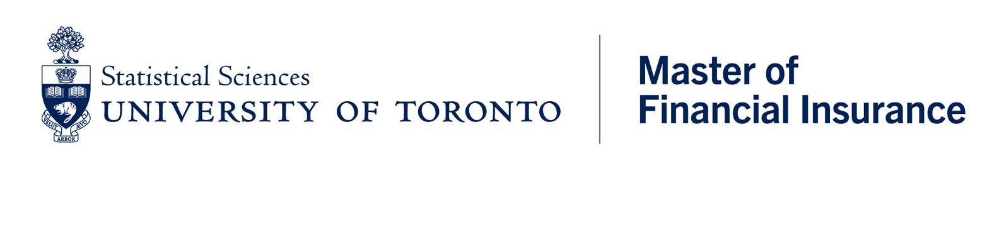
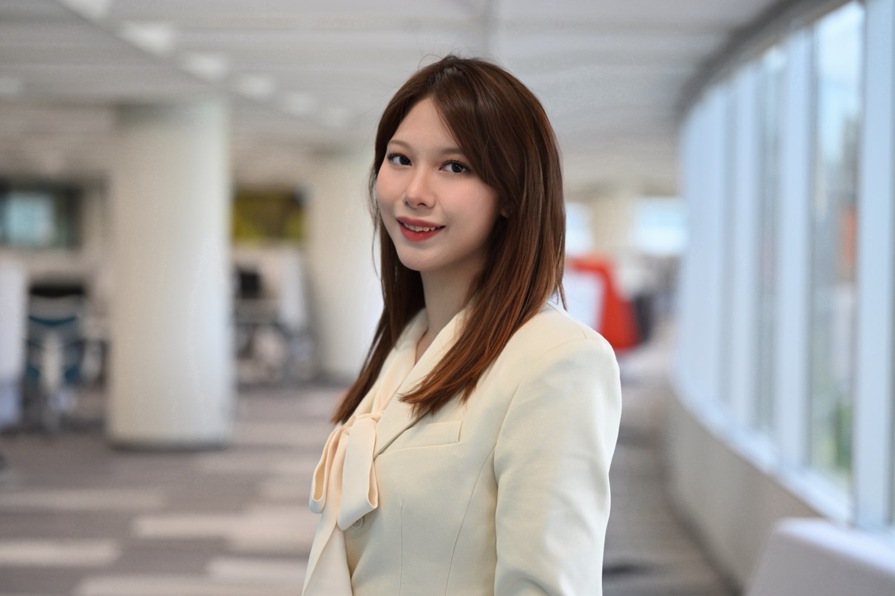
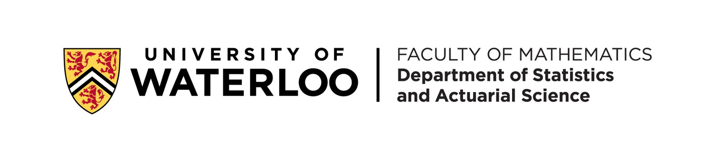
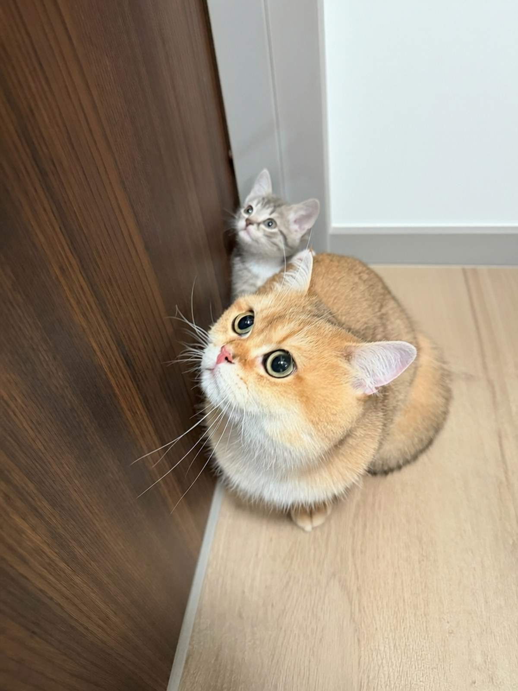
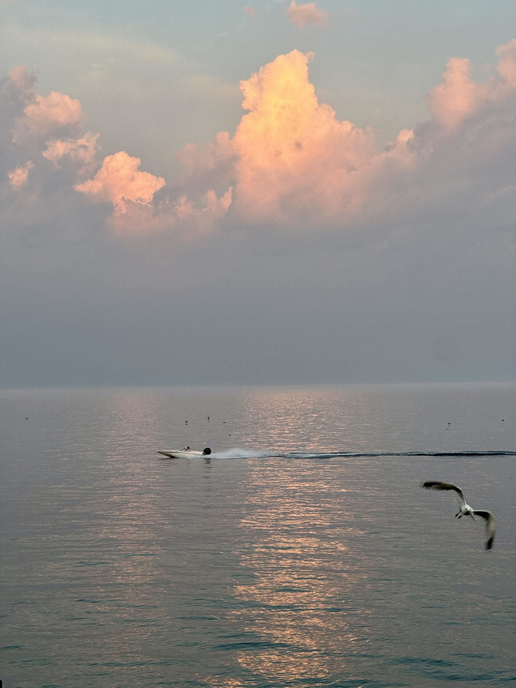

UNIVERSITY OF TORONTO
Master of Financial Insurance
Continuing my studies in mathematical finance, insurance risk management, data science, and machine learning.
FINANCIAL MATHEMATICS · RISK · DATA
I’m Catherine, a Master of Financial Insurance student at the University of Toronto. I use data and technology to understand risk and improve the way teams work.
Based in the Greater Toronto Area

I studied Financial Analysis and Risk Management at the University of Waterloo, where I graduated with distinction. I’m now pursuing a Master of Financial Insurance at the University of Toronto. My work experience includes enterprise risk, insurance compliance, web development, and process automation.
I’m interested in risk management, credit risk, and insurance analytics. At TDSB and MPAC, I worked on vendor tracking, supplier risk data, and reporting. I enjoy understanding how a process works and finding practical ways to improve it.

UNIVERSITY OF TORONTO
Continuing my studies in mathematical finance, insurance risk management, data science, and machine learning.

UNIVERSITY OF WATERLOO
My studies built a foundation in statistics, financial analysis, and quantitative risk.
Graduated with Distinction · Term Distinction in 8 terms
Professional development: FRM Part I candidate.
UNIVERSITY OF TORONTO
MUNICIPAL PROPERTY ASSESSMENT CORPORATION
TORONTO DISTRICT SCHOOL BOARD
UNIVERSITY OF WATERLOO
Worked in a four-person team to study how portfolio size and changes in mortality affect the cost of an immediate life annuity. We compared expected present values with simulated liabilities, then tested lower mortality rates across the portfolio.
These are illustrative model results. The analysis assumes independent, homogeneous policyholders and excludes expenses, profit margins, taxes, and capital requirements.
Managed a virtual brokerage portfolio across four undergraduate milestones, documenting investment decisions, trade outcomes, and how my approach to risk developed.
An academic simulation using virtual funds, not a live investment portfolio.
Worked in a three-person team to examine which vehicle characteristics were associated with price using the UCI Automobile dataset and regression analysis in R.
The fit statistic describes the analysed sample; it is not an out-of-sample prediction score. The observational analysis does not establish causation.
Worked in a four-person team to model the pass-line bet in Craps as a six-state discrete-time Markov chain, assuming two fair, independent dice.
The model covers one type of bet; other Craps bets have different probabilities and payoffs.
Designed a two-factor randomized complete block experiment to investigate the effects of workout type and time of day on calorie burn.
Cleaned experimental data and used ANOVA and visualizations in R to assess main and interaction effects. Workout type was the dominant factor; time of day had a smaller significant effect.
Transformed expert reviews from 314 project evaluation articles into structured data across six dimensions, then developed an MLP model to predict investment recommendations: Recommend, Neutral, or Not Recommend.
Data cleaning, manual annotation, outlier filtering, and train-validation splitting. Authored and published the research paper under faculty supervision at East China Normal University.

These are my two lovely cats. They’re a very special part of my life.

I love taking photos, whether I’m travelling or just on my way somewhere. When I notice a beautiful scene, I like to stop and capture it. This is one of those moments.
BILIBILI · MAY 2021 to PRESENT
I built a channel from scratch, teaching myself video editing and content strategy along the way. My videos include vlogs, film commentary, reactions, and interview-style conversations.
I enjoy planning, filming, and editing my videos. Viewers’ comments help me understand what they enjoy and what I can improve.
BUSINESS BRIGADES CLUB · JAN to APR 2024
As Marketing Executive, I designed posters and branding visuals, filmed and edited promotional content, and managed social media for events and fundraisers.
I worked with the executive team to promote events and encourage more students to take part.
Languages: I’m fluent in Mandarin and speak Cantonese at an intermediate level.
Feel free to get in touch about opportunities in risk, insurance, or financial analytics. I’m always happy to connect.